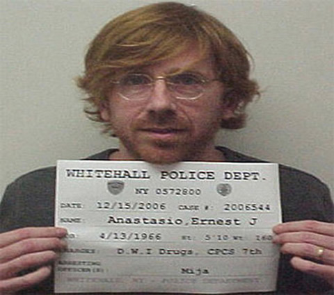

A Bump in the Road
| Home | Band Members | History | Popular Discography | Live |
A Bump in the Road

Phish "officially brokeup" fall 2004, following the Coventry Festival. The breakup was announced by the band in a spring 2005 letter to fans, and conveyed there and beyond as a permanent breakup, with certainty. As Trey told the New York Times, "I have a variety of feelings, and there's certainly sadness in there. But I have no doubts." As that paper characterized the finality, "Phish has nothing left to prove."
The reasons given for the breakup changed a bit - the desire to spend time with family, concerns about the organization becoming a burden, the pressure of expectations, the desire to avoid becoming a nostalgia act, etc. Probably each of those reasons existed, and may have been relevant. But one of the most important reasons for the breakup, as Trey revealed in later interviews (commenting to the effect that he assumed people knew the "real reason"), was his need to get clean. As he told Charlie Rose 1/2/03, "...I wanted to tell people, 'Hey, it's OK.' This was an attempt to stay healthy and keep playing for another 30 years." As he told another interviewer, "We had to stop Phish to preserve and respect it." An earlier respite, labelled "the hiatus" (the 815 days from 10/7/00 to 12/31/02), had not succeeded because it hadn't been accepted as a separation. The breakup itself didn't solve things either. But during the breakup, Trey hit bottom with an arrest, followed by probation, treatment - and the band's return. As he wrote in the opening lines of "Shine", "When the day's come and gone, You know we all ride on."
The "breakup" thus lasted 8/15/04 to 3/6/09, 1664 days, just more than twice as long as the hiatus, but apparently long enough - for Trey, and the fans.